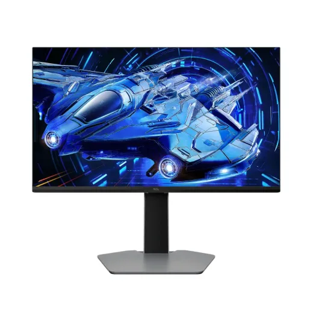
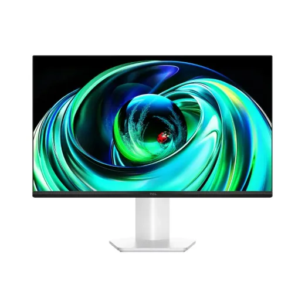
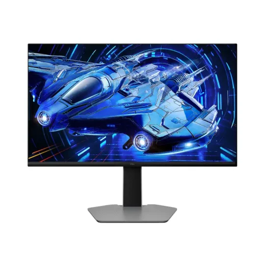
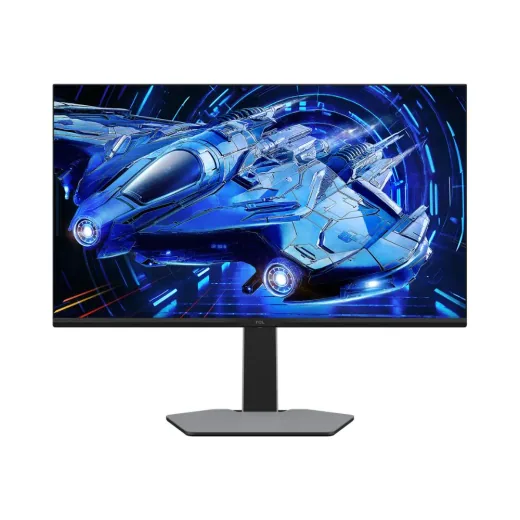

Monitores TCL en Honduras: precios comparados
4 productos TCL en 2 tiendas (La Curacao, RadioShack). Desde L 3,990.

Monitor TCL QD-Mini LED 24.5" FHD Gris 25G64L 4,597En 2 tiendas · más barato en La Curacao
Monitor TCL Mini LED 23.8" FHD Blanco 24G54L 3,990En 2 tiendas · más barato en La Curacao
Monitor TCL QD-Mini LED 27" QHD Gris 27G64L 7,999En 2 tiendas · más barato en La Curacao
Monitor TCL QD-Mini LED 31.5" QHD Gris 32G64L 9,297En 2 tiendas · más barato en La Curacao
Preguntas frecuentes
¿Dónde están más baratos los monitores TCL en Honduras?
La Curacao tuvo el precio más bajo en 4 de 4 productos TCL que se venden en varias tiendas (14 de noviembre de 2026).